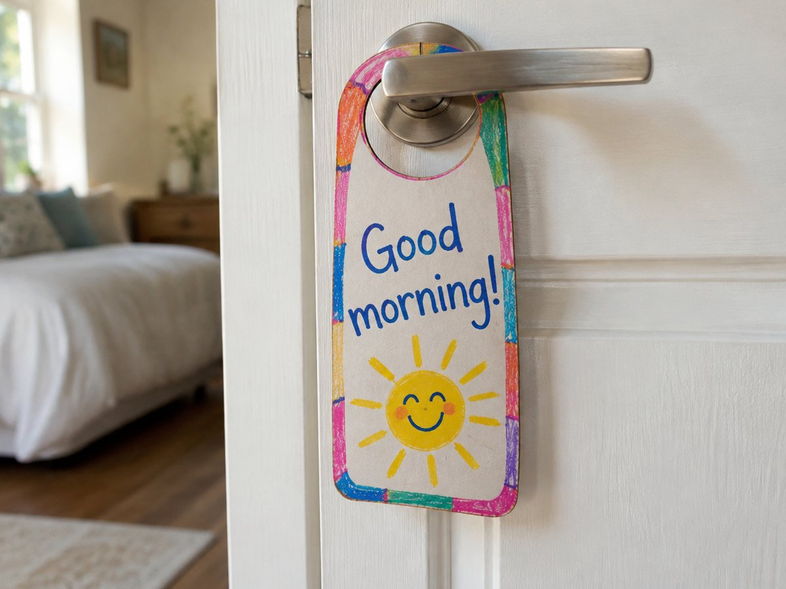

전체 단원 › 실험·활동 › 3학년 1학기 영어
현관 문고리 인사 카드

방문 손잡이에 거는 인사 카드를 만들어, 아침저녁으로 가족과 영어로 인사를 주고받아요.
만들기 20분 · 매일 1분 · 난이도 ★☆☆ 쉬움
준비물
- 문고리 카드 도안 — 앞뒤 인사 카드 4장 (A4 1장)
- 과자 상자 판지 — 카드를 붙여 두껍게 만들어요
- 풀, 가위, 색연필 —
하는 방법
- 카드 꾸미기
도안의 카드 4장(Good morning / Good night / Hello / See you)에 색칠해요. - 판지에 붙여 자르기
카드를 상자 판지에 붙이고 바깥선과 문고리 구멍을 오려요. - 문에 걸기
아침에는 Good morning 면, 밤에는 Good night 면이 보이도록 방문 손잡이에 걸어요. - 카드 보고 인사하기
아침에 방에서 나오면 카드를 Good morning 면으로 뒤집고 가족에게 "Good morning!" 하고 인사해요. 듣는 사람도 똑같이 답해요. - 안부 묻기 더하기
익숙해지면 How are you? I'm fine, thank you. 를 이어서 말해요.
3학년 영어는 인사 표현으로 시작합니다. 영어 인사는 시간대(Good morning, Good afternoon, Good evening)와 헤어질 때(Goodbye, See you)를 구분합니다. 카드에 없는 afternoon, evening 인사는 '시간대 맞히기' 놀이로 함께 익혀 주세요.
How are you? 에 꼭 I'm fine만 하지 않아도 됩니다. I'm good. / I'm great! / Not bad. 도 함께 써 보세요.
부모님이 먼저 카드를 뒤집으며 인사하면 아이가 훨씬 빨리 따라 합니다.
학교 교육과정 연결
- [4영02-10] 의사소통 활동에 흥미와 자신감을 가지고 대화 예절을 지키며 참여한다.
- [4영02-01] 쉽고 간단한 단어, 어구, 문장을 강세, 리듬, 억양에 맞게 따라 말한다.